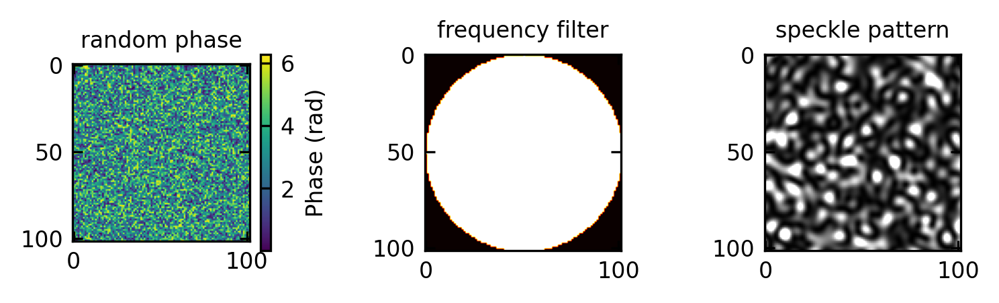

Corresponding to our previous analysis, the angular spectrum representation can be formalized using Fourier analysis. The complex amplitude transmittance \(f(x,y)\) can be written as a Fourier transform
\[f(x,y)=\iint_{-\infty}^{\infty} F(\nu_x,\nu_y) e^{i 2\pi(\nu_x x + \nu_y y)}d\nu_x d\nu_y\]
where \(F(\nu_x,\nu_y)\) give the amplitudes of the frequency components of the transmittance. With our previous expression, then the field at any plane \(z\) can be obtained by:
where \(k_z = 2\pi\sqrt{(1/\lambda)^2 - \nu_x^2 - \nu_y^2}\) is the z-component of the wavevector.
This formulation shows that the field at any distance \(z\) can be calculated by multiplying each spatial frequency component by the appropriate phase factor \(e^{-i k_z z}\) and then performing an inverse Fourier transform. This approach provides an elegant and computationally efficient method for modeling wave propagation, particularly in homogeneous media.
For propagating waves, where \(\nu_x^2 + \nu_y^2 < (1/\lambda)^2\), the factor \(e^{-i k_z z}\) represents a phase shift. For evanescent waves, where \(\nu_x^2 + \nu_y^2 > (1/\lambda)^2\), \(k_z\) becomes imaginary, resulting in exponential decay with distance.
Code
# Set parameterswidth =10# width of rectangular hole in μmx = np.linspace(-30, 30, 1000) # spatial coordinate in μmwavelengths = [0.5, 1.0, 2.0] # example wavelengths in μm# Create rectangular function (1 inside the aperture, 0 outside)rect = np.zeros_like(x)rect[np.abs(x) <= width/2] =1# Calculate spatial frequency axisdx = x[1] - x[0]freq = np.fft.fftshift(np.fft.fftfreq(len(x), dx))# Calculate Fourier transform (sinc function for a rectangular aperture)rect_ft = np.fft.fftshift(np.fft.fft(rect)) /len(x)rect_ft_mag = np.abs(rect_ft)# Create figureplt.figure(figsize=get_size(12, 6))# Plot the spectrumplt.plot(freq, rect_ft_mag / np.max(rect_ft_mag), 'b-', label='Spectrum')# Plot cutoff frequencies for different wavelengthsfor wavelength in wavelengths: cutoff =1/wavelength # cutoff frequency in cycles/μm plt.axvline(x=cutoff, color='r', linestyle='--', alpha=0.7) plt.axvline(x=-cutoff, color='r', linestyle='--', alpha=0.7)# Fix the label position to be near the corresponding cutoff line plt.text(cutoff+0.02, 0.5, f'λ = {wavelength} μm', rotation=90, va='center')# Add label for negative cutoff too plt.text(-cutoff-0.05, 0.5, f'λ = {wavelength} μm', rotation=90, va='center')# Add annotations#plt.text(0, 0.8, f'width = {width} μm', ha='center')#plt.annotate('sinc function', xy=(0.2, 0.5), xytext=(0.3, 0.7),# arrowprops=dict(arrowstyle='->'))plt.xlabel('Spatial Frequency (cycles/μm)')plt.ylabel('Normalized Amplitude')plt.xlim(-2.8, 2.8)plt.grid(True, alpha=0.3)plt.title('Spatial Frequency Spectrum of a Rectangular Aperture')plt.tight_layout()plt.show()
Figure 1— Spatial frequency spectrum of a rectangular aperture with width 10 μm. The dashed lines indicate the cutoff frequencies at which light with wavelength λ can propagate.
Transfer Function of Free space
We now examine the propagation of a monochromatic optical wave of wavelength \(\lambda\) and complex amplitude \(U(x, y, z)\) in the free space between the planes \(z=0\) and \(z=d\), called the input and output planes, respectively. Given the complex amplitude of the wave at the input plane, \(f(x, y)=U(x, y, 0)\), we want to determine the complex amplitude at the output plane, \(g(x, y)=U(x, y, d)\).
The input field \(f(x,y)\) propagates through free space to form the output field \(g(x,y)\). Using the angular spectrum representation, we can express the relationship between input and output as:
where \(F(\nu_x,\nu_y)\) is the Fourier transform of \(f(x,y)\), and \(k_z = 2\pi\sqrt{(1/\lambda)^2 - \nu_x^2 - \nu_y^2}\) is the z-component of the wavevector.
The transfer function of free space, denoted as \(H(\nu_x,\nu_y)\), is defined as the ratio of the output spectrum to the input spectrum:
This transfer function has two distinct regimes based on the values of \(\nu_x\) and \(\nu_y\):
Propagating waves: When \(\nu_x^2 + \nu_y^2 < (1/\lambda)^2\), \(k_z\) is real, and \(H(\nu_x,\nu_y) = e^{-i k_z d}\) represents a pure phase shift. These are propagating waves that carry energy from the input to the output plane.
Evanescent waves: When \(\nu_x^2 + \nu_y^2 > (1/\lambda)^2\), \(k_z\) becomes imaginary, and \(H(\nu_x,\nu_y) = e^{-|k_z| d}\) represents an exponential decay. These evanescent waves decay exponentially with distance and do not propagate energy to the far field. For spatial frequencies slightly beyond the propagating limit, where \(\nu_x^2 + \nu_y^2 \approx (1/\lambda)^2 + \Delta\), the decay constant can be approximated as \(|k_z| \approx 2\pi\sqrt{\Delta} \approx \pi\lambda/(2d^2)\), where \(d\) is the characteristic distance from the object. This means that features with spatial frequencies significantly above \(1/\lambda\) become effectively undetectable at distances greater than a few wavelengths.
A simplification of the transfer function of free space maybe obtained when considering only spatial frequencies that are much smaller than the cut-off frequency. This simplificaltion is called the Fresnel approximation and leads to
The expression for the transfer function may be simplified if the input function \(f(x, y)\) contains only spatial frequencies that are much smaller than the cutoff frequency \(1 / \lambda\), so that \(\nu_x^2+\nu_y^2 \ll 1 / \lambda^2\). The plane-wave components of the propagating light then make small angles \(\theta_x \approx \lambda \nu_x\) and \(\theta_y \approx \lambda \nu_y\) corresponding to paraxial rays.
Denoting \(\theta^2=\theta_x^2+\theta_y^2 \approx \lambda^2\left(\nu_x^2+\nu_y^2\right)\), where \(\theta\) is the angle with the optical axis, the phase factor in the transfer function is
where \(H_0=\exp (-i k d)\). In this approximation, the phase is a quadratic function of \(\nu_x\) and \(\nu_y\). This approximation is known as the Fresnel approximation.
The condition of validity of the Fresnel approximation is that the third term in the expansion is much smaller than \(\pi\) for all \(\theta\). This is equivalent to
\[
\frac{\theta^4 d}{4 \lambda} \ll 1
\]
If \(a\) is the largest radial distance in the output plane, the largest angle \(\theta_m \approx a / d\), and this condition may be written in the form
\[
\frac{N_{\mathrm{F}} \theta_m^2}{4} \ll 1,
\] where \(N_{\mathrm{F}}=a^2 / \lambda d\) is the Fresnel number. For example, if \(a=1 \mathrm{~cm}, d=100 \mathrm{~cm}\), and \(\lambda=0.5 \mu \mathrm{~m}\), then \(\theta_m=10^{-2}\) radian, \(N_{\mathrm{F}}=200\), and \(N_{\mathrm{F}} \theta^2 / 4=5 \times 10^{-3}\). In this case the Fresnel approximation is applicable.
Code
# Parameterswavelength =0.5# wavelength in arbitrary unitsz_distances = [.2] # distances for transfer function calculationnu_x = np.linspace(-3/wavelength, 3/wavelength, 1000) # spatial frequency rangenu_y =0# setting nu_y = 0 for a 1D plot along nu_x# Calculate the magnitude of the transfer function for different z valuesH_mags = []for d in z_distances:# Calculate k_z based on spatial frequencies k_z_squared = (1/wavelength)**2- nu_x**2- nu_y**2# Initialize transfer function array H = np.ones_like(nu_x, dtype=complex)# For propagating waves (real k_z) prop_mask = k_z_squared >=0 k_z_prop = np.sqrt(k_z_squared[prop_mask]) H[prop_mask] = np.exp(-1j*2* np.pi * k_z_prop * d)# For evanescent waves (imaginary k_z) evan_mask = k_z_squared <0 k_z_evan = np.sqrt(-k_z_squared[evan_mask]) H[evan_mask] = np.exp(-2* np.pi * k_z_evan * d)# Store the magnitude H_mags.append(np.abs(H))# Plot the magnitude of the transfer functionplt.figure(figsize=get_size(8, 6))for i, d inenumerate(z_distances): plt.plot(nu_x*wavelength, H_mags[i], label=f'z = {d}')plt.axvline(x=-1, color='k', linestyle='--', alpha=0.5)plt.axvline(x=1, color='k', linestyle='--', alpha=0.5)plt.text(-1.1, 0.5, '-1/λ', fontsize=8)plt.text(0.9, 0.5, '1/λ', fontsize=8)plt.xlabel(r' spatial frequency $(\nu_x·\lambda)$')plt.ylabel(r'$|H(\nu_x, 0)|$')#plt.legend()plt.ylim(0, 1.1)plt.tight_layout()plt.show()
Figure 2— The magnitude of the free-space transfer function. For propagating waves (\(\nu_x^2 + \nu_y^2 < 1/\lambda^2\)), the transfer function has magnitude 1, representing pure phase delay. For evanescent waves (\(\nu_x^2 + \nu_y^2 > 1/\lambda^2\)), the magnitude decays exponentially with distance from the origin.
Total Internal Reflection: A Spatial Frequency Interpretation
In Fourier optics, we analyze wave propagation in terms of spatial frequencies. For a monochromatic wave with vacuum wavelength \(\lambda_0\):
Wavevector components in a medium with refractive index \(n\):
Evanescent wave solution: Since \(\nu_z^2 < 0\), we have \(\nu_z = \pm i\gamma\) where \(\gamma\) is real. Choosing the physically meaningful solution:
Total internal reflection can be understood as a spatial frequency filtering phenomenon:
The medium with refractive index \(n_2\) has a maximum spatial frequency cutoff at \(\nu_{max} = n_2/\lambda_0\) for propagating waves.
When the incident wave has a tangential spatial frequency component \(\nu_x > \nu_{max}\), the second medium cannot support propagating waves at this spatial frequency.
The resulting evanescent wave can be viewed as a “frustrated” attempt to propagate high spatial frequencies that exceed the medium’s capability.
Only spatial frequencies that satisfy \(\nu_x \leq n_2/\lambda_0\) can propagate in medium 2, constituting a low-pass spatial filter.
This mathematical framework demonstrates why optical systems with lower numerical apertures (effectively lower refractive indices) cannot resolve features with spatial frequencies beyond their cutoff frequency - the same principle that underlies the diffraction limit in microscopy.
Code
# Parameterswavelength =0.5# wavelength in arbitrary unitsz_distances = [0.2] # different propagation distancesnu_x = np.linspace(-1/wavelength, 1/wavelength, 1000) # spatial frequency range (propagating waves only)nu_y =0# setting nu_y = 0 for a 1D plot along nu_x# Calculate the phase of the transfer function for different z valuesH_phases = []for d in z_distances:# Calculate k_z for propagating waves only k_z =2* np.pi * np.sqrt((1/wavelength)**2- nu_x**2- nu_y**2)# Calculate the phase (negative argument of the transfer function) phase = k_z * d# Store the phase H_phases.append(phase)# Plot the phase of the transfer functionplt.figure(figsize=get_size(8, 6))for i, d inenumerate(z_distances): plt.plot(nu_x*wavelength, H_phases[i], label=f'z = {d}')plt.xlabel(r' spatial frequency $(\nu_x·\lambda)$')plt.ylabel(r'phase $\phi(\nu_x, 0)$[rad]')plt.xlim(-3,3)plt.tight_layout()plt.show()
Figure 3— The phase of the free-space transfer function. For propagating waves (ν_x² + ν_y² < 1/λ²), the transfer function introduces a phase delay that increases with spatial frequency. This phase represents the wavefront curvature during propagation.
The figure below now visualizes the effect of free space propagation on the phase of the transfer function when light of certain wavelength is used to illuminate and rectangular aperture of 10 µm width.
Code
# Set parameterswidth =10# width of rectangular hole in μmx = np.linspace(-30, 30, 1000) # spatial coordinate in μmdx = x[1] - x[0] # spatial step sizecutoff_wavelengths = [0.5, 1.0, 2.0] # wavelengths in μm# Create rectangular function (1 inside the aperture, 0 outside)rect = np.zeros_like(x)rect[np.abs(x) <= width/2] =1# Calculate spatial frequency axisfreq = np.fft.fftshift(np.fft.fftfreq(len(x), dx))# Calculate Fourier transformrect_ft = np.fft.fftshift(np.fft.fft(rect))# Create figurefig, axs = plt.subplots(2, 2, figsize=get_size(12,10))axs = axs.flatten()# Plot original rectangular apertureaxs[0].plot(x, rect, 'b-')axs[0].set_title('(a) Original Rectangular Aperture')axs[0].set_xlabel('Position (μm)')axs[0].set_ylabel('Amplitude')axs[0].grid(True, alpha=0.3)# For each cutoff wavelength, apply filter and reconstructfor i, wavelength inenumerate(cutoff_wavelengths):# Create low-pass filter based on cutoff frequency cutoff_freq =1/wavelength # cutoff frequency in cycles/μm lowpass_filter = np.zeros_like(freq, dtype=complex) lowpass_filter[np.abs(freq) <= cutoff_freq] =1.0# Apply filter filtered_ft = rect_ft * lowpass_filter# Inverse Fourier transform to get reconstructed signal reconstructed = np.fft.ifft(np.fft.ifftshift(filtered_ft))# Calculate intensity (magnitude squared) intensity = np.abs(reconstructed)**2# Normalize for display intensity = intensity / np.max(intensity)# Plot reconstructed intensity axs[i+1].plot(x, intensity, 'r-') axs[i+1].set_title(f'({"bcd"[i]}) λ = {wavelength} μm') axs[i+1].set_xlabel('Position (μm)') axs[i+1].set_ylabel('Intensity') axs[i+1].grid(True, alpha=0.3)# Highlight the original aperture region axs[i+1].axvspan(-width/2, width/2, color='gray', alpha=0.2)plt.tight_layout()plt.show()
Figure 4— Effect of spatial frequency cutoff on image reconstruction. (a) Original rectangular aperture. (b-d) Reconstructed intensity after applying different wavelength cutoffs. As the cutoff wavelength increases, more high-frequency components are lost, resulting in blurring and loss of edge sharpness.
This description of free space propagation provides insight into important phenomena such as:
Diffraction limits: Spatial frequencies beyond \(1/\lambda\) correspond to evanescent waves that decay exponentially with distance, explaining why sub-wavelength features cannot be observed in the far field. This would mean that light should not propagate through subwavelength holes. This is what you would expect for the grid in front of your microwave. Yet, light can penetrate through subwavelength holes not only as evanescent fields. Bethe used in 1944 an idealized model where the film was infinitely thin and the metal was a perfect conductor. Under these assumptions, he derived a straightforward expression for the transmission efficiency \(\eta_B\) (normalized to the aperture area):
\[\eta_B = \frac{64(kr)^4}{27\pi^2}\]
where \(k = 2\pi/\lambda\) represents the wavevector magnitude of the incoming light with wavelength \(\lambda\), and \(r\) is the hole radius. This equation clearly shows that \(\eta_B\) scales as \((r/\lambda)^4\), indicating that the optical transmission would decrease rapidly as \(\lambda\) becomes larger than \(r\).
Figure 5— Diffraction and typical transmission spectrum of visible light through a subwavelength hole in an infinitely thin perfect metal film.
However, real apertures with finite depth exhibit waveguide properties. Light transmission through these waveguides differs fundamentally from free-space propagation. The confined geometry modifies the field’s dispersion relation, with the aperture’s lateral dimensions determining the cutoff wavelength \(\lambda_c\) beyond which propagation ceases. When incident wavelength \(\lambda > \lambda_c\), transmission decays exponentially, indicating the non-propagating regime (Fig. 2). In real metals, the transition from propagative to evanescent regimes occurs gradually rather than at a sharply defined \(\lambda_c\).
Figure 6— Optical transmission properties of single holes in metal films. The holes were milled in suspended optically thick Ag films illuminated with white light. a, A circular aperture and b, its transmission spectrum for a 270 nm diameter in a 200-nm-thick film. c, A rectangular aperture and d, its transmission spectrum as a function of the polarization angle h for the following geometrical parameters: 210 nm 3 310 nm, film thickness 700 nm. (Degiron, A., Lezec, H. J., Yamamoto, N. & Ebbesen, T. W. Optical transmission properties of a single subwavelength aperture in a real metal. Opt. Commun. 239, 61–66 (2004).)
The transmission of light through subwavelength apertures provides exciting new tools for spectroscopy and imaging applications. These tools enable the manipulation of light at the nanoscale, leading to advancements in areas such as microscopy, sensing, and communication.
Resolution limits: An optical system with a maximum acceptance angle \(\theta_{max}\) can only capture spatial frequencies up to \(\sin\theta_{max}/\lambda\), limiting the finest details that can be resolved.
Spatial filtering: Optical components like apertures and lenses act as spatial filters, selectively transmitting or modifying certain spatial frequency components.
Amplitude Modulation
Let’s examine how spatial amplitude modulation affects the angular propagation of light. Consider a transparency with complex amplitude transmittance \(f_0(x, y)\). If its Fourier transform \(F_0(\nu_x, \nu_y)\) extends over spatial frequency ranges \(\pm \Delta \nu_x\) and \(\pm \Delta \nu_y\) in the \(x\) and \(y\) directions, the transparency will deflect an incident plane wave by angles \(\theta_x\) and \(\theta_y\) within the ranges:
\[\pm \sin^{-1}(\lambda \Delta \nu_x)\]
and
\[\pm \sin^{-1}(\lambda \Delta \nu_y)\]
respectively.
Now consider a second transparency with complex amplitude transmittance:
where \(f_0(x, y)\) varies slowly compared to the exponential carrier term, meaning \(\Delta \nu_x \ll \nu_{x0}\) and \(\Delta \nu_y \ll \nu_{y0}\). This represents an amplitude-modulated function with spatial carrier frequencies \(\nu_{x0}\) and \(\nu_{y0}\) and modulation function \(f_0(x, y)\). According to the shift property of the Fourier transform, the transform of \(f(x, y)\) is:
\[F_0(\nu_x - \nu_{x0}, \nu_y - \nu_{y0})\]
The transparency will deflect a plane wave in directions centered around the angles:
\[\theta_{x0} = \sin^{-1}(\lambda\nu_{x0})\]
and
\[\theta_{y0} = \sin^{-1}(\lambda\nu_{y0})\]
This behavior can be understood by viewing \(f(x, y)\) as a combination of the base transmittance \(f_0(x, y)\) with a phase grating having transmittance \(e^{-i 2\pi(\nu_{x0}x + \nu_{y0}y)}\) that provides the angular deflection.
Code
# Set up the coordinate systemx = np.linspace(-5, 5, 500)y = np.linspace(-5, 5, 500)X, Y = np.meshgrid(x, y)# Parameterswavelength =0.5# arbitrary unitsnu_x0 =2.0# carrier spatial frequencytheta_x0 = np.rad2deg(np.arcsin(wavelength * nu_x0)) # corresponding angle# Create base pattern f₀(x,y) - using a Gaussian patternsigma =1.5f0 = np.exp(-(X**2+ Y**2)/(2*sigma**2))# Create carrier wavecarrier = np.exp(-1j*2*np.pi*nu_x0*X)# Create modulated patternf = f0 * carrier# Calculate 2D Fourier transformsF0 = np.fft.fftshift(np.fft.fft2(f0))F = np.fft.fftshift(np.fft.fft2(f))# Create frequency axesfreq_x = np.fft.fftshift(np.fft.fftfreq(len(x), x[1]-x[0]))freq_y = np.fft.fftshift(np.fft.fftfreq(len(y), y[1]-y[0]))# Create figure with 4 subplotsfig, axs = plt.subplots(2, 2, figsize=get_size(12, 12))axs = axs.flatten()# Plot the base pattern f₀(x,y)im0 = axs[0].imshow(f0, extent=[x.min(), x.max(), y.min(), y.max()], cmap='gray', origin='lower')axs[0].set_title('(a) Base Pattern f₀(x,y)')axs[0].set_xlabel('x')axs[0].set_ylabel('y')# Plot the carrier wave (real part)im1 = axs[1].imshow(np.real(carrier), extent=[x.min(), x.max(), y.min(), y.max()], cmap='gray', origin='lower')axs[1].set_title(f'(b) Carrier Wave: $e^{{-j2\\pi\\nu_{{x0}}x}}$')axs[1].set_xlabel('x')axs[1].set_ylabel('y')# Plot the modulated pattern (real part)im2 = axs[2].imshow(np.real(f), extent=[x.min(), x.max(), y.min(), y.max()], cmap='gray', origin='lower')axs[2].set_title('(c) Modulated Pattern f(x,y)')axs[2].set_xlabel('x')axs[2].set_ylabel('y')# Plot Fourier transforms (log magnitude to enhance visibility)# Plot along central row in frequency space (freq_y = 0)central_row =len(freq_y) //2axs[3].plot(freq_x, np.log(np.abs(F0[central_row, :]) +1), 'b-', label='F₀(ν)')axs[3].plot(freq_x, np.log(np.abs(F[central_row, :]) +1), 'r--', label='F(ν)')axs[3].set_title('(d) Fourier Transforms')axs[3].set_xlabel('Spatial Frequency ν_x')axs[3].set_ylabel('Log Magnitude')axs[3].legend()# Add markers to show the shift to ν₀axs[3].axvline(x=0, color='g', linestyle=':', alpha=0.7, label='Original Center')axs[3].axvline(x=nu_x0, color='m', linestyle=':', alpha=0.7, label=f'Shifted Center (ν₀={nu_x0})')#axs[3].text(nu_x0 + 0.1, axs[3].get_ylim()[1]*0.9, f'θ₀={theta_x0:.1f}°', color='m')# Limit frequency axis for better visibilityaxs[3].set_xlim(-5, 5)plt.tight_layout()plt.show()
Figure 7— Visualization of amplitude modulation and the corresponding angular deflection. (a) The base pattern f₀(x,y) - a Gaussian envelope. (b) A carrier wave with spatial frequency ν₀. (c) The amplitude-modulated pattern f(x,y)=f₀(x,y)e^(-j2πν₀x). (d) Fourier transforms showing how the spectrum shifts with modulation, corresponding to angular deflection.
This principle enables spatial-frequency multiplexing, where two images \(f_1(x, y)\) and \(f_2(x, y)\) can be recorded on the same transparency using the encoding:
By illuminating this combined transparency with a plane wave, the two images are deflected at different angles determined by their carrier frequencies, allowing them to be spatially separated. This technique is particularly valuable in holography, where separating different image components recorded on the same medium is often necessary.
Structured Illumination Microscopy (SIM)
The amplitude modulation concepts presented here form the theoretical foundation for Structured Illumination Microscopy (SIM), a super-resolution imaging technique. In SIM, a sample is illuminated with a known spatially structured pattern, typically a sinusoidal grid. This can be mathematically represented as an illumination intensity pattern:
\[I_{\text{illum}}(x,y) = I_0[1 + m\cos(2\pi\nu_0 x + \phi)]\]
where \(I_0\) is the average intensity, \(m\) is the modulation depth, \(\nu_0\) is the spatial frequency of the illumination pattern, and \(\phi\) is the phase.
When this structured pattern illuminates a sample with spatial structure \(S(x,y)\), the resulting observed image is simply the product:
\[D(x,y) = S(x,y) \cdot I_{\text{illum}}(x,y)\]
Substituting the illumination pattern:
\[D(x,y) = S(x,y) \cdot I_0[1 + m\cos(2\pi\nu_0 x + \phi)]\]\[D(x,y) = I_0 \cdot S(x,y) + I_0 \cdot m \cdot S(x,y)\cos(2\pi\nu_0 x + \phi)\]
Using Euler’s formula, we can rewrite the cosine term:
\[D(x,y) = I_0 \cdot S(x,y) + \frac{I_0 \cdot m}{2} \cdot S(x,y)[e^{j(2\pi\nu_0 x + \phi)} + e^{-j(2\pi\nu_0 x + \phi)}]\]
where \(\tilde{S}\) is the Fourier transform of the sample structure, and \(\tilde{D}\) is the Fourier transform of the detected image.
This equation reveals how structured illumination enables access to high spatial frequencies beyond the conventional diffraction limit. In standard microscopy, the optical system acts as a low-pass filter due to the diffraction limit, restricting detectable spatial frequencies to \(|\nu| \leq \nu_{\text{max}} = \frac{NA}{\lambda}\), where NA is the numerical aperture and λ is the wavelength.
The key insight is that structured illumination creates a “moiré effect” between the illumination pattern and the sample structure. Consider a sample with high spatial frequency components that exceed \(\nu_{\text{max}}\) and would normally be undetectable. When this sample is illuminated with the structured pattern of frequency \(\nu_0\), these high-frequency components interact with the illumination pattern to produce difference frequencies that fall within the detectable range.
Figure 8— The moiré effect in SIM. When a sample with high spatial frequency features is illuminated with a structured pattern, the interference creates moiré fringes at lower frequencies that can be detected by the microscope. This allows information about sub-diffraction structures to be encoded in observable signals. (see Gustafsson, M. G. L. Nonlinear structured-illumination microscopy: Wide-field fluorescence imaging with theoretically unlimited resolution. Proc. Natl. Acad. Sci. 102, 13081–13086 (2005))
Specifically, sample features with spatial frequency \(\nu_s > \nu_{\text{max}}\) combine with the illumination frequency \(\nu_0\) to produce components at \(\nu_s - \nu_0\) and \(\nu_s + \nu_0\). If \(\nu_s - \nu_0 < \nu_{\text{max}}\), then this difference frequency becomes detectable by the optical system, effectively bringing previously inaccessible high-frequency information into the observable range.
For example, if a sample contains structures with spatial frequency \(\nu_s = 1.7\nu_{\text{max}}\) and we apply illumination with \(\nu_0 = 0.8\nu_{\text{max}}\), the difference frequency becomes \(\nu_s - \nu_0 = 0.9\nu_{\text{max}}\), which falls within the detectable range. This allows us to extract information about sample features that would be invisible under conventional illumination.
To separate and reconstruct these frequency-shifted components, we need multiple images with different phases of the illumination pattern. Typically, three images with phases \(\phi = 0°, 120°, 240°\) are acquired, allowing us to solve the following system of equations:
By extracting these frequency-shifted components and computationally restoring them to their original positions in frequency space, we can reconstruct spatial frequencies beyond the conventional diffraction limit, typically achieving a resolution improvement factor of 2 in each dimension, or a factor of 2 beyond what would be possible with the same wavelength and numerical aperture in conventional microscopy.
Frequency Modulation
We now examine the transmission of a plane wave through a transparency made of a “collage” of several regions, the transmittance of each of which is a harmonic function of some spatial frequency, as illustrated below. If the dimensions of each region are much greater than the period, each region acts as a grating or a prism that deflects the wave in some direction, so that different portions of the incident wavefront are deflected into different directions. This principle may be used to create maps of optical interconnections, which may be used in optical computing applications
Figure 9— Deflection of light by a transparency made of several harmonic functions (phase gratings) of different spatial frequencies. (source Saleh/Teich Principles of Photonics).
This concept of directed light deflection through controlled spatial frequency modulation stands in stark contrast to what happens when spatial frequencies are distributed randomly, as we’ll see next with speckle patterns.
Speckle: Random Frequency Modulation
When coherent light interacts with a rough surface or passes through a scattering medium, the resulting intensity pattern exhibits a characteristic granular appearance known as speckle. This phenomenon represents a natural example of random spatial frequency modulation that can be elegantly described using the Fourier optics framework we’ve developed.
While the optical interconnect example above demonstrates how carefully designed spatial frequency distributions can create predictable, useful light paths, speckle represents the opposite case - where randomly distributed spatial frequencies create complex interference patterns. In essence, speckle is what happens when nature creates its own “random optical interconnect map.”
Speckle Formation
Speckle arises when coherent wavefronts undergo spatially varying phase shifts that cause complex interference. From our spatial frequency perspective, we can model a rough surface as applying a random phase modulation to the incident wavefront:
where \(\phi(x,y)\) is a random phase function corresponding to the surface height variations. When this scattered field propagates and interferes with itself, it produces the characteristic speckle pattern. Unlike our controlled interconnect example, where each region deliberately directs light in a specific direction, here each microscopic region of the rough surface randomly deflects light, creating a complex superposition of wavefronts with random phases and directions.
Code
# Code to generate and display a simulated speckle patternfrom scipy.ndimage import gaussian_filter# Create random phase screenN =512random_phase =2*np.pi*np.random.rand(N, N)# Apply some spatial correlation to the phase to get more realistic speckle# First generate complex fieldfield = np.exp(1j* random_phase)# Apply aperture (spatial filtering) to control speckle sizeaperture = np.zeros((N, N))aperture_radius = N//10center = N//2y, x = np.ogrid[:N, :N]mask = (x - center)**2+ (y - center)**2<= aperture_radius**2aperture[mask] =1# Apply aperture in Fourier domain (equivalent to spatial filtering)field_ft = np.fft.fftshift(np.fft.fft2(field))filtered_field_ft = field_ft * aperturespeckle_field = np.fft.ifft2(np.fft.ifftshift(filtered_field_ft))# Calculate intensity pattern (square of the field amplitude)speckle_pattern = np.abs(speckle_field)**2# Display resultsfig, axs = plt.subplots(1, 3, figsize=get_size(13, 4))# Crop phase screen to same dimensions as aperture for consistent displayphase_display = random_phase[center-aperture_radius:center+aperture_radius, center-aperture_radius:center+aperture_radius]# Crop aperture to same dimensions for consistent displayaperture_display = aperture[center-aperture_radius:center+aperture_radius, center-aperture_radius:center+aperture_radius]# Crop speckle pattern to same size for consistencyspeckle_display = speckle_pattern[center-aperture_radius:center+aperture_radius, center-aperture_radius:center+aperture_radius]# Plot phase screen with consistent dimensionsim0 = axs[0].imshow(phase_display, cmap='viridis')axs[0].set_title('random phase')plt.colorbar(im0, ax=axs[0], label='Phase (rad)')# Plot aperture with consistent dimensionsim1 = axs[1].imshow(aperture_display, cmap='hot')axs[1].set_title('frequency filter')# Plot speckle pattern with consistent dimensionsim2 = axs[2].imshow(speckle_display, cmap='gray', vmax=3*np.mean(speckle_display))axs[2].set_title('speckle pattern')plt.tight_layout()plt.show()

Figure 10— Speckle formation process. (a) Coherent light incident on a rough surface acquires random phase shifts. (b) The resulting scattered field creates a speckle pattern in the observation plane. (c) The characteristic granular appearance of a fully developed speckle pattern.
The random yet deterministic nature of speckle patterns shares remarkable similarities with the weight matrices of trained neural networks, offering an intriguing conceptual framework that connects Fourier optics with modern computational systems.
Conceptual Connections to Neuronal Networks
Wave Superposition vs. Neuronal Contributions: Just as each speckle grain represents the constructive interference of many wave components, each connection in a neural network can be viewed as the “superposition” of many training examples that collectively shaped that weight.
Information Encoding:
Speckle patterns encode information about the scattering medium in a distributed, holographic manner
Neural networks encode learned features in a distributed pattern across weight matrices
Statistical Properties:
Speckle intensity follows a negative exponential distribution for fully developed speckle
Neural network weights often approximate Gaussian distributions after training
Fourier Domain Representation:
Speckle can be analyzed in the Fourier domain to reveal the spatial frequency content of the scattering medium
Neural network weights can be analyzed in the frequency domain to reveal the spectrum of features they’ve learned to detect
The mathematical connection becomes even more apparent when considering both systems as complex-valued functions:
A speckle field at a plane can be expressed as: \(E(x,y) = \sum_k A_k e^{j\phi_k} e^{j(k_x x + k_y y)}\)
A neural network layer output can be expressed as: \(y_i = \sigma\left(\sum_j w_{ij} x_j + b_i\right)\)
Both involve a weighted sum of inputs, and both transform information from one domain to another through operations that can be represented as spatial filtering operations.
These connections between speckle field and information processing give rise to research field of imaging and computing with disordered materials.
Frequency Modulation with Continuously Varying Spatial Frequencies
A transparency may also have a harmonic transmittance with a spatial frequency that varies gradually across its surface, similar to how a musical note changes pitch in an FM radio signal. This is easier to visualize than the fixed-frequency patterns we discussed earlier.
Let’s look at a transparency with this phase-altering property:
\[f(x, y) = \exp[-i2\pi\phi(x, y)]\]
where \(\phi(x, y)\) is a smooth function that changes slowly compared to the wavelength of light (\(\lambda\)).
If we zoom in around any point \((x_0, y_0)\), we can approximate \(\phi(x, y)\) using the first few terms of a Taylor series (which you’ve seen in calculus):
Near this point, our transparency function behaves like:
\[\exp[-i2\pi(\nu_x x + \nu_y y)]\]
which we recognize as a harmonic function with local spatial frequencies \(\nu_x\) and \(\nu_y\).
Since these derivatives change as we move across the transparency, the spatial frequencies also vary with position. As a result, different parts of the incoming light wave get deflected by different angles:
it introduces a phase shift of \(2 \pi \phi(x, y)\) where \(\phi(x, y)= -x^2 / 2 \lambda f\).
Code
# Parameterswavelength =0.5# wavelength in arbitrary unitsfocal_length =10# focal length# Create coordinate gridx = np.linspace(-10, 10, 500)y = np.linspace(-10, 10, 500)X, Y = np.meshgrid(x, y)# Calculate the phase function φ(x,y) = x²/2λfphi = (X**2)/(2*wavelength*focal_length)# Calculate the complex transmittance f(x,y) = exp(jπx²/λf)transmittance = np.exp(1j*np.pi*X**2/(wavelength*focal_length))# Calculate deflection angle θₓ = -x/f (for small angles)deflection_angle =-X/focal_length# Create a figure with two subplotsfig, axs = plt.subplots(1, 2, figsize=get_size(12, 5))# Plot the phase (wrapped between 0 and 2π)phase_plot = axs[0].imshow(np.real(transmittance), extent=[x.min(), x.max(), y.min(), y.max()], cmap='gray', origin='lower')axs[0].set_title('phase profile $\\phi(x,y)$')axs[0].set_xlabel('x')axs[0].set_ylabel('y')fig.colorbar(phase_plot, ax=axs[0], label='Phase (rad)')# Plot the deflection angle along the x-axisaxs[1].plot(x, -x/focal_length, 'r-')axs[1].set_title('deflection angle $\\theta_x$')axs[1].set_xlabel(r'position $x$')axs[1].set_ylabel('angle $\\theta_x$ (rad)')axs[1].grid(True, alpha=0.3)axs[1].axhline(y=0, color='k', linestyle='-', alpha=0.3)axs[1].axvline(x=0, color='k', linestyle='-', alpha=0.3)plt.tight_layout()plt.show()
Figure 12— Phase function of a cylindrical Fourier lens. (left) The 2D phase profile showing how phase varies quadratically with x. (right) The resulting deflection angle as a function of position, showing the linear relationship that causes focusing.
This phase profile causes the wave at position \((x, y)\) to be deflected by angles \(\theta_x= \sin^{-1}(\lambda \partial \phi / \partial x)=\sin^{-1}(-x / f)\) and \(\theta_y=0\). For small values where \(|x / f| \ll 1\), the deflection angle simplifies to \(\theta_x \approx-x / f\), creating a linear relationship between deflection angle and position. When a plane wave illuminates this transparency, each point of the wavefront experiences a position-dependent deflection, transforming the overall wavefront shape. At each position \(x\), the local wavevector is redirected by an angle \(-x / f\), causing all light rays to converge at a focal point located at distance \(f\) from the transparency along the optical axis, as illustrated below.
Figure 13— A transparency with transmittance \(f(x, y)=\exp \left(j \pi x^2 / \lambda f\right)\) bends the wave at position \(x\) by an angle \(\theta_x \approx-x / f\), functioning as a cylindrical lens with focal length \(f\).
This transparency operates exactly like a cylindrical lens with focal length \(f\). Extending this concept, a transparency with transmittance \(f(x, y)=\exp \left[j \pi\left(x^2+y^2\right) / \lambda f\right]\) acts as a spherical lens with focal length \(f\). This elegant mathematical expression perfectly captures the phase transformation property of a thin lens.